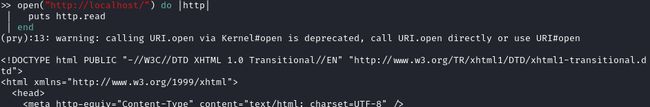
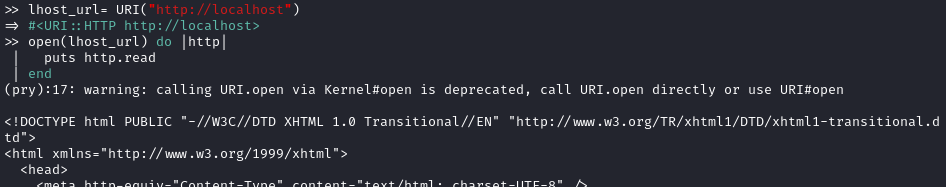
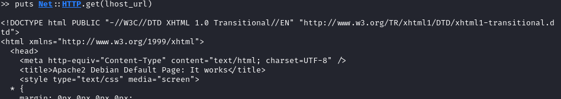

Libraries and modules
Net::HTTP library
Documentation:
https://ruby-doc.org/stdlib-2.1.1/libdoc/net/http/rdoc/Net/HTTP.html
get class method to obtain the body part of the http response from
http://localhost/.
response = Net::HTTP.get("localhost", "/")
print(response)
Open-uri libraries
Documentation:
https://ruby-doc.org/stdlib-3.0.0/libdoc/open-uri/rdoc/OpenURI.html
open method
open("http://localhost/") do |http|
puts http.read
end

URI
URI is a module(collection of methods, constants and class variables) providing classes to handle
Uniform Resource Identifiers.
It is used to encapsulate an URL (remember that URL are a subset of
URI)
URI with open-uri library
lhost_url= URI("http://localhost")
open(lhost_url) do |http|
puts http.read
end
URI with
Net::HTTP library
puts Net::HTTP.get(lhost_url)
